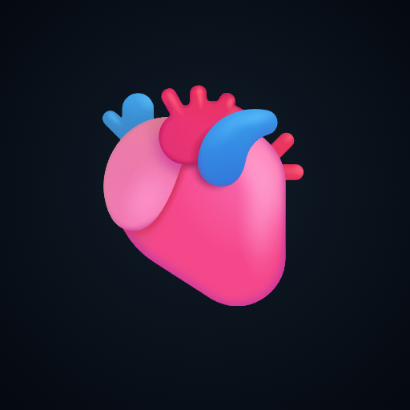

Sístole · 12 Derivaciones
Un electro dibujado muestra lo que uno quiere enseñar.
Uno real muestra lo que el paciente tiene.
Nueva sección
12 Derivaciones
0+
electros reales revisados
PTB-XL y PhysioNet/CinC 2021
0
casos elegidos uno por uno
Solo los trazados claros y didácticos
0
verificaciones automáticas
Cada explicación se mide sobre la señal
Un caso de la sección
Mujer, 67 años
Hipertensa. Dolor retroesternal opresivo de 50 minutos, con náuseas y sudoración fría. Pálida y mal perfundida.
Su electro · trazado real
¿Cuál es tu diagnóstico?
Pausá el video y pensalo
Respuesta: IAM inferior
Por qué
Elevación en la cara inferior… y su espejo.
↑ ST elevado · II, III, aVF
↓ Descenso recíproco · I, aVL
Ese espejo es lo que separa un infarto de una pericarditis.
Perla clínica
III más elevada que II → coronaria derecha
Antes de dar nitratos, pedí V3R–V4R: si el ventrículo derecho está comprometido, el nitrato puede hundirle la presión.

Sístole
Simulador de ECG · nueva sección 12 Derivaciones
Probalo en
sistole.cmdtech.uy
Web · iOS · Android